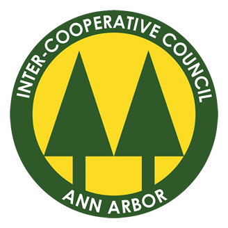
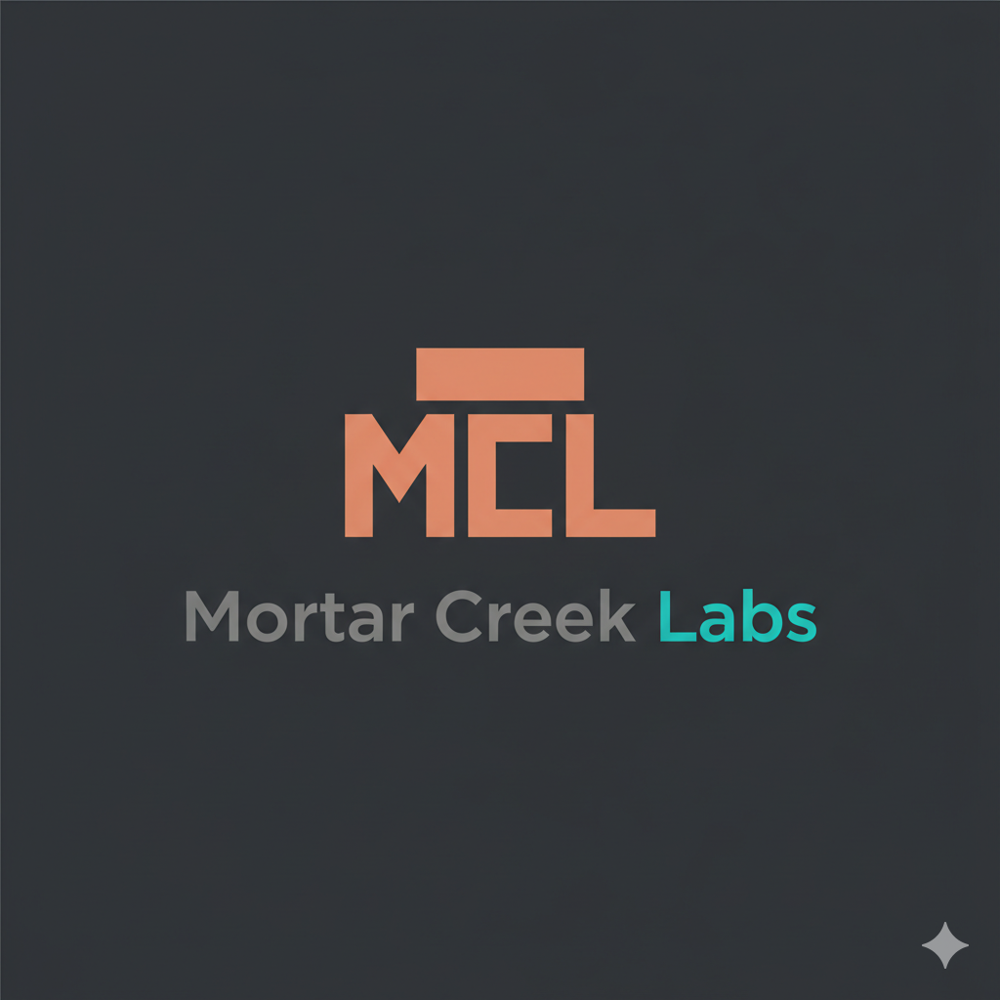

Hello! Caught you 📸
Recent Posts
Dec 15, 2024
Building a Modern Portfolio Site
A deep dive into creating a responsive, interactive portfolio...
Nov 28, 2024
AI-Powered Local Development
Exploring Apple's MLX framework for running LLMs locally...
Nov 10, 2024
Hardware Meets Software
Creating custom Arduino devices with companion mobile apps...
Filter Projects by Technology
All
Front-End
Back-End
General
HTML
CSS
JavaScript
React Native
React
Python
C++
Flask
Node.js
PostgreSQL
Google Cloud
Express
Arduino
MLX
Gradio
ML/AI
Hardware
Git
Docker
4 projects
About Me
Computer Science graduate from the University of Michigan with a passion for building innovative solutions. Experienced in full-stack development, AI/ML, and hardware projects. Always exploring new technologies and creating meaningful applications.
Career Journey
Click to learn more
2013-2018
Eagle Scout
2020-2024
University of Michigan

2021-2024
ICC Leadership

2023-2024
UM ITS Internship
2024
Nar Cannabis

2024-2025
Mortar Creek Labs

Career Journey
Click to learn more
2013-2018
Eagle Scout
2020-2024
University of Michigan
2021-2024
ICC Leadership
2023-2024
UM ITS Internship
2024
Nar Cannabis
2024-2025
Mortar Creek Labs